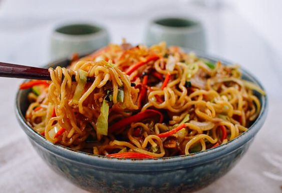

Japanese yakisoba chicken with chicken and vegetables.
Enjoy this delicious japanese meal!
in a large skillet combine sesame oil, canola oi and chili paste; stir-fry 30 seconds.
Add garlic and stir fry an additional 30 seconds. Add chicken and 1/4 cup of the soy
sauce and sit fry until chicken is no longer pink, about 5 minutes. Remove mixture
from pan, serrtr aside, and keep warm.
In the emptied pan combine the onion, cabbage, and carrots. Stir-fry until cabbage
begins to wilt, 2 to 3 minutes. Stir in the remaining soy sauce, cooked noodles, and
the chicken mixture to pan and mmix to blend, serve and enjoy!